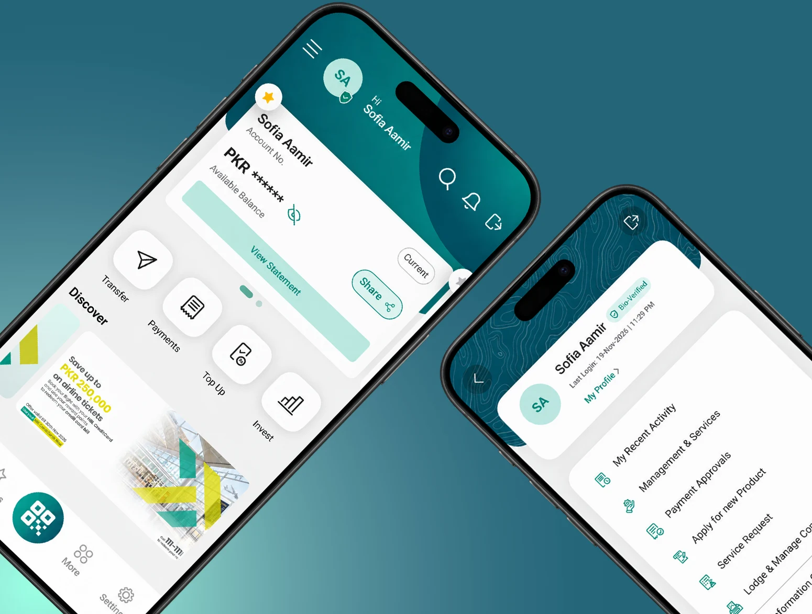
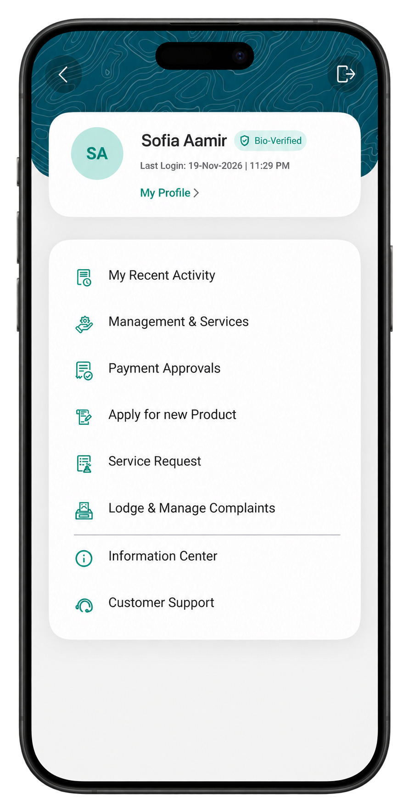

Mobile banking · Product design
Financial services · Navigation · Mobile UX
More banking services, without more friction.
This mobile banking application was designed for a financial institution. The goal was to make everyday navigation easier and introduce more features without adding unnecessary steps, visual noise or cognitive load.

Overview
The experience keeps balances, transfers and payments close while organizing a broader set of services through search and clear categories.
Role
Product and interface design
Platform
iOS mobile banking
Focus
Navigation and discoverability
Selected screens
Four views define the product’s navigation rhythm.
Each screen has a distinct job while sharing the same visual hierarchy, bottom navigation and teal product language.




Back to selected work
View all projects All work